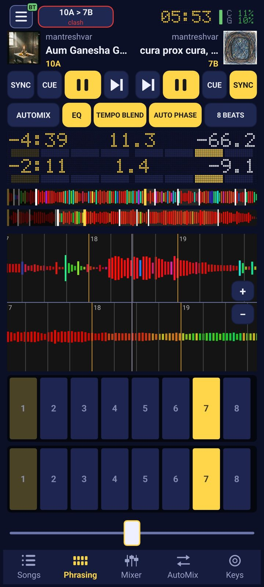
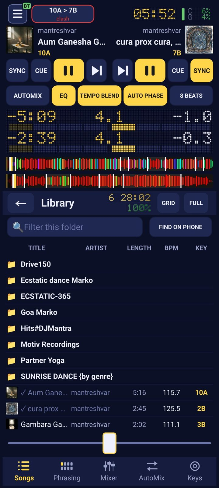
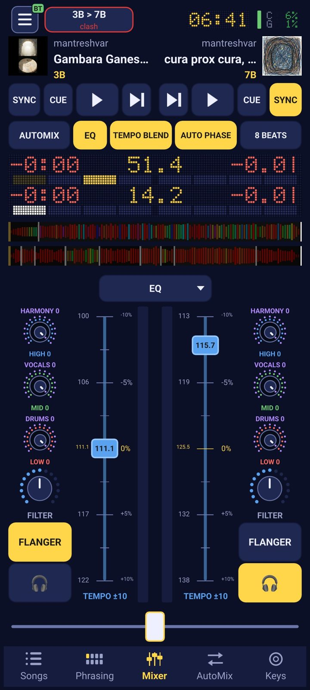

The DJ app that trains you to hear the music: every beat, every phrase, every intro, breakdown and drop. Mix on your phone with the Hercules DJControl Mix Ultra, and understand what you hear while you play.

A DJ mixes parts of songs, not songs. DJ Mantra counts the beats and the phrases for you, names the section you are in and the one that is coming, and lights it on the controller, until you hear it without looking.


A DJ doesn't mix songs, a DJ mixes parts of songs. If you can hear where the intro starts, where the beat breaks and where it comes back, you know when to come in and when to leave. This guide shows it on two songs from my set: every part is a real waveform you can play.
One beat. In house music it's the kick drum: 120 to 125 beats a minute.
Four beats. The first is the strongest, and everything important starts on it.
Eight bars, 32 beats. Producers change the song on phrase lines: every 8, 16 or 32 bars something comes in or leaves.
One or more phrases of the same character: intro, breakdown, chorus. A section lasts 8, 16 or 32 bars, rarely anything in between.
Reading the waveform: red is bass and kick, green the mids, blue the highs. When the red disappears, the beat has stopped; when it comes back at full width, that's the drop.
The educational player: listen and watch the song change. Click a part, repeat it with LOOP, follow the bar count.
LISTEN —
House, organic house, techno, trance, drum and bass: music built around the instruments, not around a singer. It's made for DJs, so its beginnings and endings are simple and easy to mix. If a voice appears, it's usually a short sample used as an instrument. The order is almost always the same: intro, breakdown and build-up, main, breakdown and build-up again, main, outro.
The start of the song, made for mixing. Often just kick and percussion, then one instrument after another every 8 bars. It lasts 16 or 32 bars.
The waveform is narrow and even, red kicks in a steady row.
This is where you come in: the new song's intro goes over the outro of the one that's playing.
The beat stops. Kick and bassline drop out; pads, textures, sometimes a voice remain. Room for the dancers to breathe.
The waveform narrows suddenly and the red disappears.
Don't leave the song in the middle of a breakdown: the floor is waiting for the drop that comes after it.
The end of the breakdown that rises: snare rolls, a rising noise sweep, a filter opening. Tension before the return.
The waveform grows to the right, bar by bar.
Don't bring anything new in here: let the tension reach its peak.
The moment everything comes back: kick, bassline, the main melody. The first bar of the main part, the moment the dance floor waits for.
Full width and the red come back in a single bar.
Drop on the drop: bring the other song in exactly on its drop and you lift the room twice.
The meat of the song: everything is in, phrase after phrase, something new every 16 bars. Also called the drop or the groove.
Wide, dense, all three colours.
The safest place to mix: there's no voice to clash with another voice.
The end of the song, the intro in reverse: instruments leave one by one until only the kick and an echo remain.
The waveform thins, the colours fade.
This is where you leave: the outro and the next song's intro play together for 16 or 32 bars.
Pop, vocal house, soul, mantras and kirtan: music built around a singer and a story. You recognise the parts by the voice: the chorus repeats, the verse tells. Different mixing rules apply here, because two voices must never collide.
The start, before the first voice or with a short lead-in. Short in radio edits, 16 or 32 bars of beat in DJ versions.
Pick the DJ versions (extended mix): a two-bar radio intro can't be mixed.
The verse: the singer tells the story. The words don't repeat, but each verse has the same number of bars as the one before.
Don't cut a verse: a sentence stopped halfway sounds like a mistake.
A short climb from the verse into the chorus: the energy gathers, the melody rises. Usually 4 or 8 bars.
The sign that the chorus is a few bars away.
The chorus, the hook: the part you remember and sing along to. It almost always carries the song's title and repeats, the same number of bars every time.
The easiest place to mix in vocal music; the new song's chorus sits well on the end of the old song's chorus.
The bridge: once in a song, different from everything else. It connects the chorus to something else and gives a pause before the last chorus.
If it sounds like neither a verse, nor a chorus, nor the end, it's the bridge.
The end: often a repeated chorus fading away, or a beat without the voice, left for the DJ.
Leave when the voice is done: two singers at the same time confuse the floor.
A whole song on one line: a letter for the part, a number for the bars. Write it on the record sleeve or into the comment field of your DJ software and you know the structure without listening.
vo next to a part means there's a voice in it, bt single beats that aren't a full bar.
In instrumental music almost everything can be mixed: intro over outro is the classic, main over main is safe, and a breakdown only if a drop follows it. Count phrases: the new song comes in on the first bar of a phrase, never in the middle.
In vocal music, watch the voice: mix in the intro, the outro and the chorus, never in the middle of a verse. When two songs overlap, only one of them may sing.
Following the course Instrumental Structure and Vocal-Based Music. The songs in the educational player are from my set; the beat from djay Pro's analysis, the sections from the kick, the frequency bands and the voice separated from the song (Demucs, Whisper).
In the app, this is live: the Phrasing view counts the bars and phrases of the song you are playing, and the controller's pads light the beat, so the lesson goes on while you mix.
The pads count the phrase: beat 1 to 8 lights as the song plays, so you bring the next song in on the one. NOW and NEXT name the section you are in and the one coming.
On the Hercules DJControl Mix Ultra the pads light the beats in every pad mode. SHIFT + pad 1 says “1 is here”.
Every song's key in Camelot notation; the top bar warns when two keys clash (10A > 7B) and the Keys tab finds what fits.
Turn down the vocals, the drums or the harmony of a song while it plays: the classic way to mix two singers without a clash.
Let the app mix a playlist for you and watch how it lines up beats and phrases, then do it yourself.
Red bass and drums, green mids, blue highs, as in the lesson: you see the breakdown and the drop coming.
The open-source Mixxx 2.5.6 engine: two decks, sync, key lock, pitch, loops, hot cues, EQs, effects, BPM and key analysis.
Songs from USB drives and SD cards are copied before they play, so pulling the stick out does not stop the music.
Add a folder and it becomes a tree of playlists that stays in the library, even with the drive unplugged.
★ ratings, every column sortable, an Export column, and lists of missing songs with links to TIDAL, Bandcamp, Beatport and Qobuz.
MP4, MOV, MKV and more play their sound; the first picture becomes the cover.
The phone's speaker, USB audio or Bluetooth, following you when headphones or a speaker are connected.
The controller DJ Mantra is made for: two jog wheels, 16 pads that light the beats, mixer, filter, a battery for hours. It connects to the phone over Bluetooth by itself, or with a USB-C cable. Best of NAMM 2025.
DJControl Mix Ultra on Amazon.de →About €169 on Amazon.de, October 2026.
DJ Mantra plays your own files. Find the songs you are missing on TIDAL, in full quality: the library's Export lists them with a TIDAL link each.
Try TIDAL →For Android phones (64-bit, Android 8 or newer). Install the app, connect the Mix Ultra, and open the Phrasing view with your first song.
Download the latest versionOpen source, built on Mixxx (GPL). Install the APK and allow installing from this source when the phone asks.